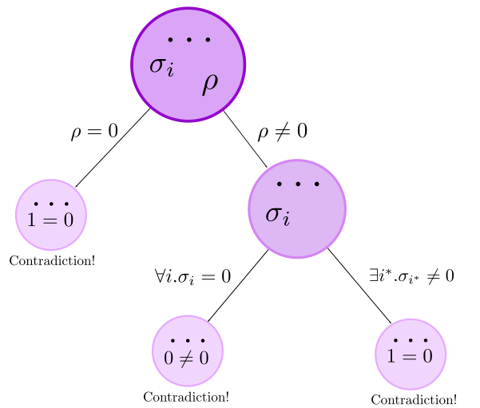

3. Proving security
The tool translates the input file into constraints. In particular, into Laurent polynomial equalities and inequalities. To build a proof, we need to show that the constraints are not satisfiable. There are rules to simplify the constraints, perform case distinctions on the parameters and derive contradictions.
The following picture shows the proof strategy. The algorithm performs exhaustive case distinctions in the parameters, building a proof tree and splitting up a problem into simpler sub-problems. The goal is to find a contradiction in every leaf node, because this means that the original problem is infeasible and implies the security of the correspondig cryptographic construction. 
We describe how to use the available rules and give an intuition of how they work:
goto
During a proof, due to case distinctions, the proof tree may contain several open goals (unsolved leafs). This rule allows you to change the current working goal:goto n.simplify
This rule has no additional arguments:simplify.We show a small example of simplification: $$ \begin{array}{ll} \exists j_{1}. & \\ \sigma + \left( \sum_{j_{3} \not \in \{ j_{1}\}} \rho_{j_{1}}\cdot \rho'_{j_{3}} \right)= 0 & \land \\ \forall j_{2}\not \in \{ j_{1} \}. \rho_{j_{1}}\cdot \rho'_{j_{2}} = 0 & \\ \end{array} \hspace{1cm} \longrightarrow \hspace{1cm} \begin{array}{ll} \exists i. & \\ \sigma = 0 & \land \\ \forall j\not \in \{ i \}. \rho_{i}\cdot \rho'_{j} = 0 & \\ \end{array} $$
contradiction
This rule is used when a contradiction was found.contradiction.coeff
This rule exploits the fact that if a polynomial is equal to zero, then when interpreting the polynomial as a polynomial over uniform variables, the coefficients for all monomials must be zero. The rule could be summarized as follows: $$ \begin{array}{ll} \dots & \land \\ {\cal E} = 0 & \land\\ \dots & \\ \end{array} \ \ \ \ \ \ \longrightarrow \ \ \ \ \ \ \begin{array}{ll} \dots & \land\\ {\cal E} = 0 & \land\\ \forall i_{1},\dots,i_{k}. {\sf Coeff}_{\cal M}({\cal E}) = 0 & \land\\ \dots \\ \end{array} $$ It introduces a new equation, where the monomial ${\cal M}$ depends on index variables $i_{1},\dots,i_{k}$ and the expression ${\cal E}$ does not contain any of these index variables. The syntax is the following:coeff (M) n.extract_coeffs
This rule has no additional arguments:extract_coeffs.simp_Coeff
This rule is part of the simplify routine. It simplifies coeff expressions in the natural way. A simple example of its behaviour is the following: $$ \begin{array}{lll} 1. & a\cdot X + b\cdot Y + c\cdot X\cdot Y = 0 & \\ \end{array} $$ we applycoeff (X*Y) 1. and we get,
$$
\begin{array}{lll}
1. & a\cdot X + b\cdot Y + c\cdot X\cdot Y = 0 & \land \\
2. & {\sf Coeff}_{X\cdot Y}(a\cdot X + b\cdot Y + c\cdot X\cdot Y) = 0 & \\
\end{array}
$$
after simp_Coeff. we get
$$
\begin{array}{lll}
1. & a\cdot X + b\cdot Y + c\cdot X\cdot Y = 0 & \land \\
2. & c = 0 & \\
\end{array}
$$
In practice, this rule is more complicated due to the fact that the adversary may be adaptive.
As explained
above,
we distinguish between uniform variables and handle variables. All variables in the experiment, but
Oracle inputs, are uniform variables. However, Oracle inputs must be instantiated (possibly in an adaptive
way) by the adversary. Oracle input variables (handle variables) and depend at the same time
on other handle variables (corresponding to earlier queries to the Oracle) and uniform variables. They
ultimately depend only on uniform variables, but, since the number of queries is not fixed, these relation
is not bounded.
Despite this issue, in some cases it is possible to prove that a particular handle variable does not contain certain monomial. When this happens, it is possible to simplify a Coeff to $0$.
case_distinction
This rule is used to perform case distinctions on the parameters. The syntax is:case_distinction p.- If it is a non-indexed parameter or an indexed parameter whose index is existentially quantified, the current goal is divided into two different goals, where one of them includes the equation $p = 0$ and the other one includes the equation $p \neq 0$.
- If it is an indexed parameter whose index is not existentially quantified, the current goal is divided into two different goals, where one of them includes the equation $\forall i. p_{i} = 0$ and the other one includes the equation $p_{i^{*}} \neq 0$ where $i^{*}$ is a new existentially quantified index variable.
split_in_factors
The syntax is:split_in_factors n.divide_by_param
The syntax is:divide_by_param p.Under the assumption that a parameter is not null, we can divide by it. Therefore, to apply this rule for parameter $p$, the equation $p \neq 0$ must appear in the system. This rule applies division by $p$ in all equations where $p$ is a common factor of every term. (All the rules are designed to avoid dealing with negative degree parameters).
assure_Laurent
The syntax is:assure_Laurent n.As an example, let $X,Y$ be uniform variables and let $M$ be a handle variable. Let $\sigma$ be a parameter. The equation $X\cdot M + \sigma\cdot Y \cdot M + \sigma - 1 = 0$ is equivalent to $$ M = \frac{1-\sigma}{X+\sigma \cdot Y} $$ and asuming that $M$ must be a Laurent polynomial, we can derive new equations on $\sigma$. In particular, in this case we have $\sigma = 0 \ \lor \ \sigma = 1$. Otherwise $M$ is a rational expression different from a Laurent polynomial.